LIAS בטלפון אנדרואיד — מדריך לעורך דין במשרד
גרסה 3.40 ומעלה. המדריך למחשב: מדריך לעורך דין חדש (מק).
1. התקנה
- פתחו בטלפון את הקישור הכללי: lias-ai-app.github.io/app. זה אותו קישור לכל עורכי הדין.
- הקישו על הורדת קובץ ההתקנה (קובץ APK). האפליקציה לא נמצאת ב־Google Play.
- בפתיחת הקובץ אנדרואיד יציג „מטעמי אבטחה, הטלפון לא מורשה להתקין אפליקציות לא מוכרות”. הקישו הגדרות, הפעילו „התרה מהמקור הזה” עבור הדפדפן שממנו הורדתם (Chrome או פיירפוקס), וחזרו אחורה.
- הקישו התקנה. אם Play Protect שואל, בחרו „התקנה בכל זאת”.
2. בקשה להתחבר ואישור המשרד
אפליקציה שהותקנה עכשיו לא רואה כלום. במסך הראשון „בקשה להתחבר”:
- בחרו את חשבון ה־Google של המשרד, כתבו את שמכם (וטלפון, לא חובה).
- הקישו שליחת בקשה. יופיע: „הבקשה נשלחה. אין גישה עד שהמשרד יאשר – המסך יתעדכן לבד.”
- המשרד מאשר במק ובוחר הרשאה. אין צורך לעשות דבר; המסך מתעדכן לבד.
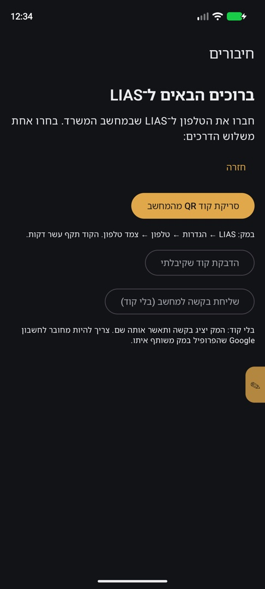
| הרשאה | מה מותר |
|---|---|
| צפייה בלבד | רואים את המסמכים באפליקציה, בלי להוריד. |
| הורדה | הטלפון מוריד עבור הלקוח במקביל למק. |
| הורדה בשיתוף המק | הטלפון מוריד ומשתף את הכניסה שלו ל־gov.il עם המק. |
ההרשאה הנוכחית מופיעה כ„ההרשאה שלכם: …”. בדף כל לקוח יש גם „הרשאת הטלפון ללקוח הזה”; שינוי בטלפון או במק משנה את שניהם.
3. סיור בלשוניות
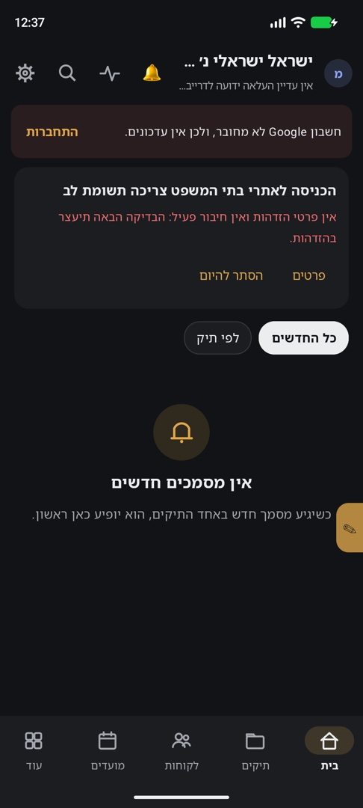
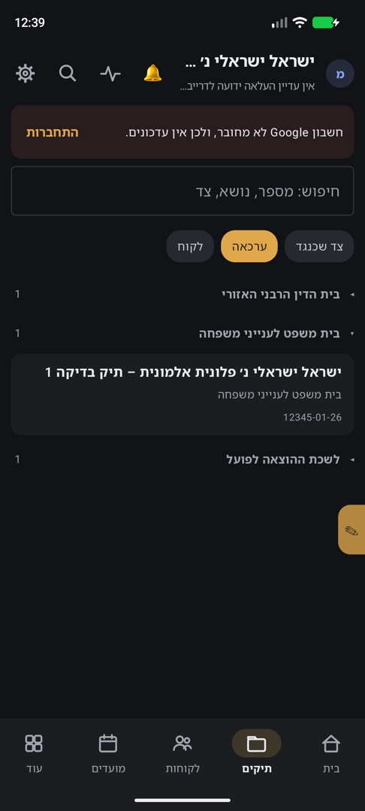
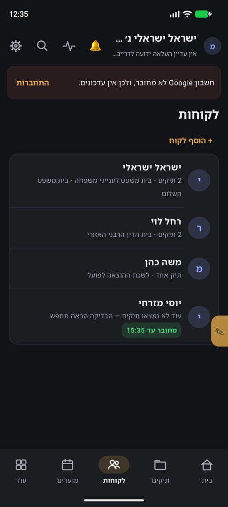
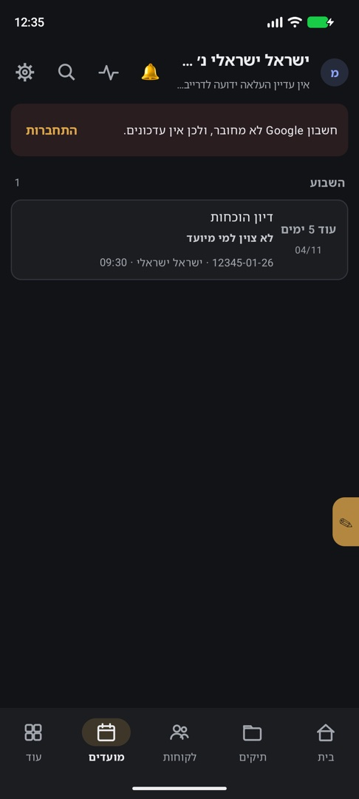
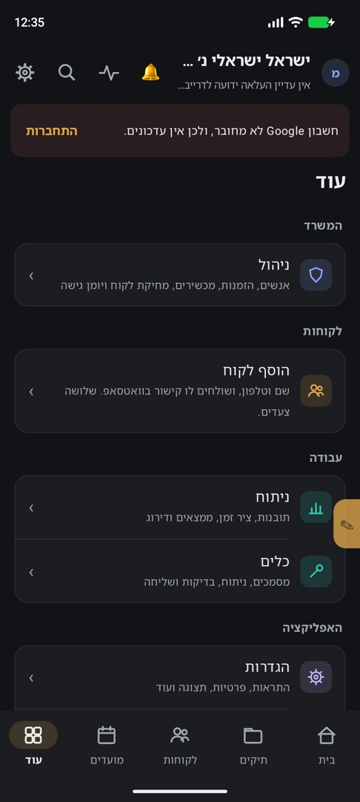
| לשונית | מה יש בה |
|---|---|
| בית | מסמכים חדשים מכל התיקים, ראשונים למעלה. בתחתית: מתי סונכרן כל אתר (נט המשפט, בתי הדין, הוצאה לפועל). |
| תיקים | כל התיקים, חיפוש לפי מספר, נושא או צד, ומיון לפי ערכאה או לפי הצד שכנגד. |
| לקוחות | הלקוחות של המשרד. הקשה על לקוח פותחת את דף הלקוח. |
| מועדים | דיונים ומועדים, נכונים לעדכון האחרון מהמק. |
| עוד | הגדרות, הערות ודיווחים, דפים זמינים, תמלול, עזרה. |
שורת הכלים העליונה
- הפעמון — תיבת הודעות: גרסה חדשה, בדיקה שהסתיימה, חיבור של לקוח שפג, תשובות להערות. „סמן הכל כנקרא” למעלה.
- חיפוש (זכוכית מגדלת) — „חיפוש בכל התיקים והמסמכים”: מספר תיק (גם חלקי), שם, ערכאה, נושא או כותרת מסמך.
- הורדה (חץ) — „הורדה מהטלפון” (פרק 4). גלגל השיניים — הגדרות.
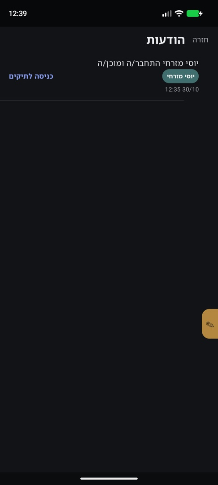
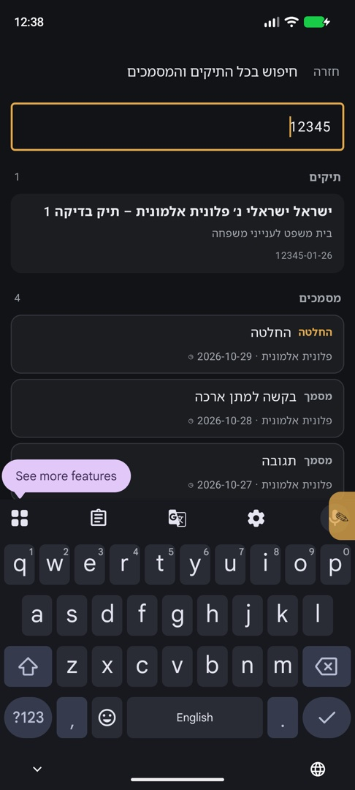
מצב לקוח
כשנכנסים ללקוח, כל המסך מקבל מסגרת בצבע של הלקוח ופס עליון „פרופיל לקוח: שם”. כל מה שרואים ועושים — רק של הלקוח הזה. חזרה למשרד מחזיר לתצוגת המשרד. אם יש מסגרת — אתם לא במשרד.
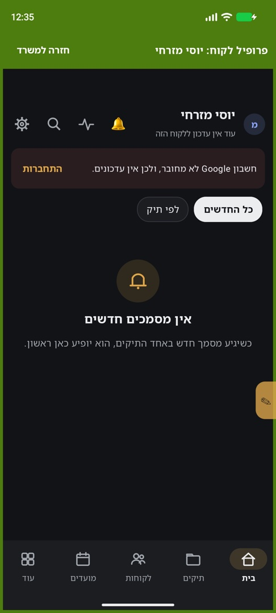
4. הורדות מהטלפון
הטלפון יכול להוריד מסמכים מהפורטלים בעצמו, גם כשהמק כבוי — אם ההרשאה היא „הורדה” או „הורדה בשיתוף המק”. ב„צפייה בלבד” אין כפתור הורדה.
- היכנסו ללקוח (מצב לקוח), והקישו על חץ ההורדה.
- הורדה עכשיו. ההתקדמות מופיעה ב„ריצות אחרונות”.
- הקישו על ריצה כדי לראות את הפירוט: כמה ברשימה, חדשים, הורדו, הועלו, דולגו.
השורה „מחובר בשם”
בכל ריצה מופיע מחובר בשם: מי · איך · מתי — למשל „המשרד” או „לקוח …”, ואיך נכנסו (קוד מהטלפון, קישור שהלקוח נכנס בו, חיבור שהגיע מהטלפון). בדקו שזה הלקוח הנכון. אם המשתמש המחובר לפורטל אינו הלקוח שנבחר, ההורדה נעצרת ושום דבר לא נשמר.
„מי מוריד את התיקים של המשרד” נקבע בהגדרות: במקביל (ברירת מחדל), תיאום, רק המק, או רק הטלפון — אותה הגדרה כמו במק.
5. כניסה ל־gov.il: תוסף פיירפוקס
הדרך המהירה להיכנס לפורטלים מהטלפון היא התוסף LIAS Sign-in בפיירפוקס לאנדרואיד. הוא שולח את הכניסה ישר לאפליקציה, גם כשהמחשב כבוי.
- התקינו את Firefox מ־Google Play.
- באפליקציה: הגדרות ← המשרד והחיבורים (בטלפון שמנהל כמה אנשים: האנשים שלי), ובתחתית הדף ← „תוסף פיירפוקס לכניסה מהטלפון”.
- התקנה — נפתח בפיירפוקס הדף lias-ai-app.github.io/addon. התקינו משם את התוסף.
- חזרו לאפליקציה ← חיבור ← „למי הכניסה?”: המשרד (אני) או לקוח מהרשימה.
- קישור החיבור נפתח בפיירפוקס ומתחבר לבד. אם לא נפתח — הוא הועתק; הדביקו אותו בתוסף.
- בדף התוסף שלושת השלבים — פיירפוקס, התקנה, חיבור — צריכים להיות ירוקים.
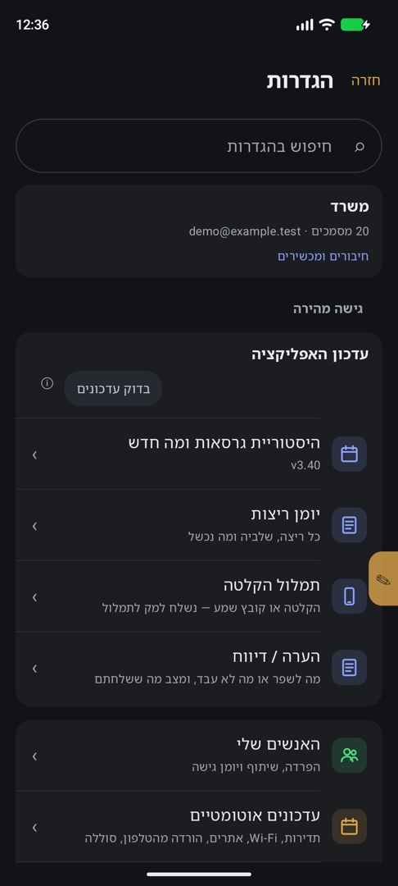
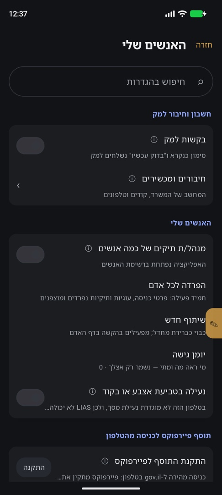
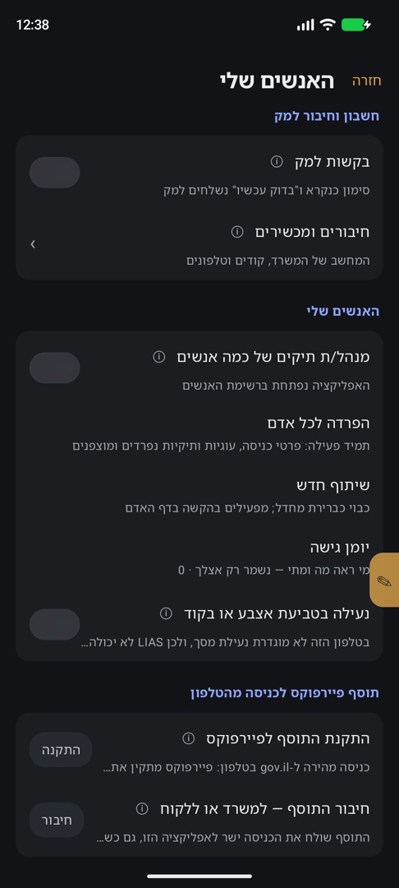
מאז, כשנכנסים ל־gov.il בפיירפוקס, האפליקציה מקבלת את הכניסה („הכניסה מהתוסף נשמרה. ההורדה מתחילה.”). במק — ראו מדריך המק.
6. הערות, דפים, הקלטות ומסמכים
הערה / דיווח
העיפרון הצהוב בצד המסך פותח „הערה / דיווח על המסך הזה”: טקסט, צילום המסך, תמונה מהגלריה, הקלטה קולית (עד 8 תמונות ו־5 הקלטות). לפני שליחה גררו מלבן על כל מה שפרטי — הוא יושחר. המצב והתשובה מהמק מופיעים ב„עוד ← הערה / דיווח”.
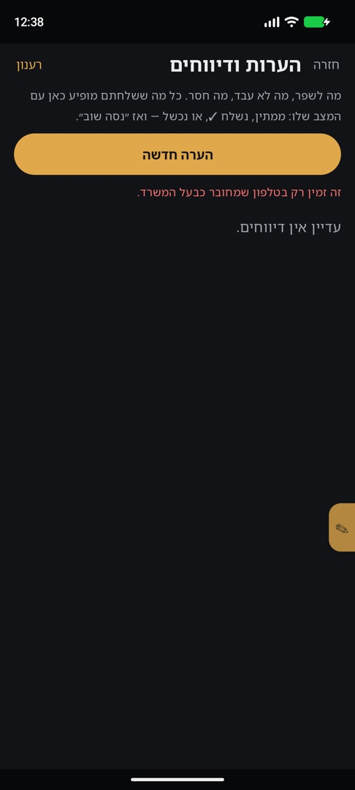
דפים ודוחות
„עוד ← דפים זמינים”: דוחות, מסמכים וצירי זמן שהמק פרסם. „פתיחה” מציג באפליקציה; „שיתוף” שולח לאפליקציה אחרת.
הקלטות לתמלול
„עוד ← תמלול הקלטה”: מקליטים או בוחרים קובץ שמע. הוא נשלח למק, והתמלול חוזר לאפליקציה.
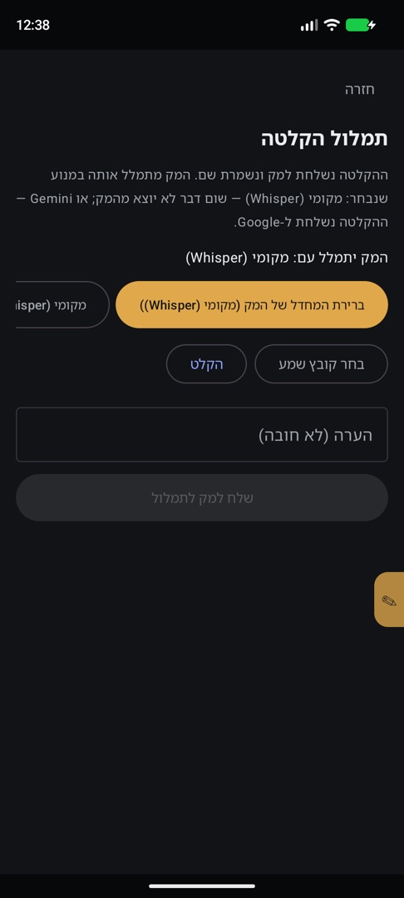
בחירת מסמכים, סינון ו־ZIP
- בתיבת המסמכים מסננים: הכל, לא נקראו, החלטות, שלנו, של הצד השני, חשובים.
- לחיצה ארוכה על מסמך פותחת בחירה. אחר כך: סמן כנקרא, סמן כחשוב, או הורד לטלפון.
- „ZIP של התיק לטלפון”: המחשב אורז את התיק, וכשמופיע „קובץ ZIP מהמחשב מוכן” — מורידים אותו.
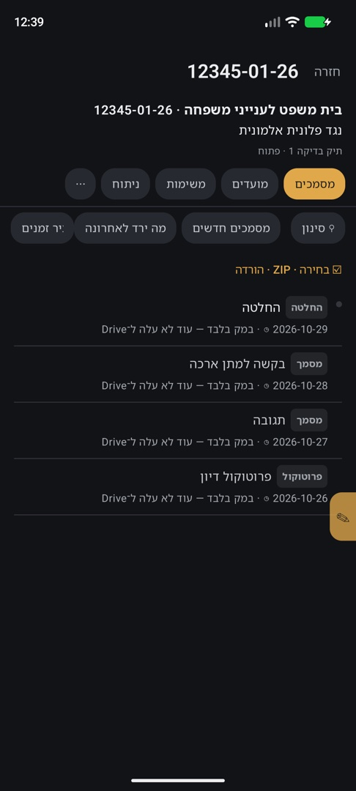
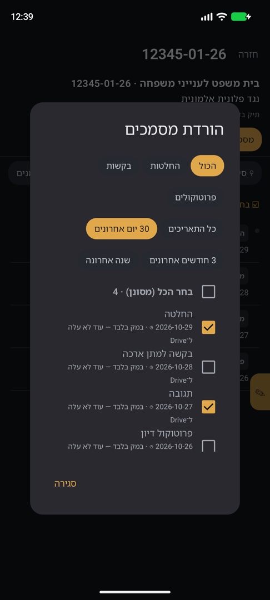
7. סוללה, רקע ועדכונים
אנדרואיד עוצר אפליקציות ברקע. כדי שהבדיקה ברקע תעבוד:
- הגדרות הטלפון ← אפליקציות ← LIAS ← סוללה ← „ללא הגבלה” (בסמסונג: „לא מוגבל”, והוציאו את LIAS מ„אפליקציות במצב שינה”).
- כבו „חיסכון בסוללה” כשמורידים הרבה; מתחת לסף הסוללה (בהגדרות LIAS: „תנאי הטלפון להורדה”) הבדיקה לא מתחילה בלי מטען.
- בהגדרות LIAS: „כל כמה זמן לבדוק ברקע” (15–240 דק׳) ו„לבדוק רק ב־Wi-Fi”.
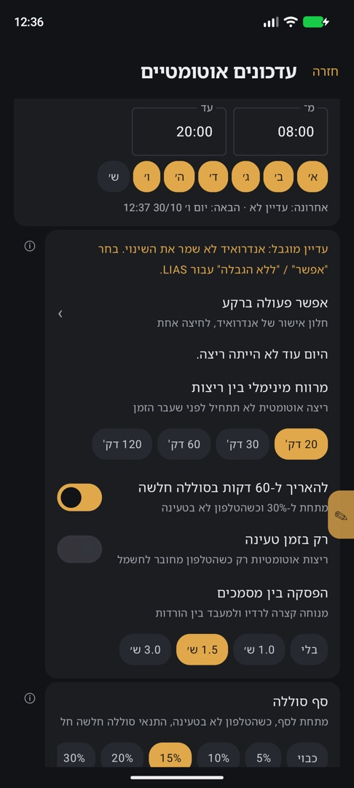
עדכון: כשיש גרסה חדשה מגיעה הודעה בפעמון „גרסה חדשה … מוכנה” עם עדכן. אפשר גם הגדרות ← „עדכון האפליקציה”. קובץ שלא עבר בדיקת שלמות לא יותקן.
8. פרטיות
- נעילה בטביעת אצבע או בקוד — פעילה כברירת מחדל: בפתיחה ואחרי 5 דקות בלי שימוש. אל תכבו. אם לטלפון אין נעילת מסך, LIAS לא יכולה להינעל — הגדירו קוד.
- צילומי מסך: כשהאפשרות כבויה, מסמכים לא נראים בצילומי מסך.
- המסמכים השמורים בטלפון מוצפנים.
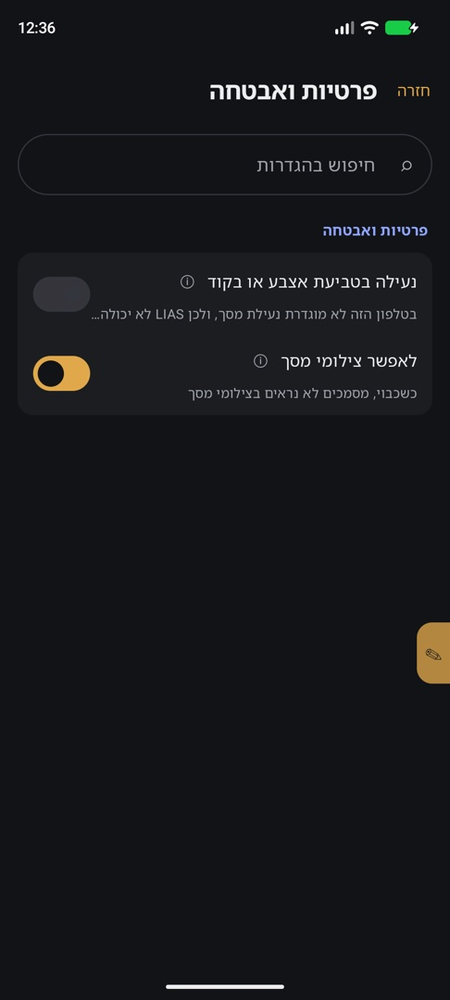
9. תקלות נפוצות
| מה רואים | מה עושים |
|---|---|
| „הטלפון לא מורשה להתקין אפליקציות לא מוכרות” | הגדרות ← „התרה מהמקור הזה” לדפדפן, וחזרה להתקנה. |
| „הבקשה נשלחה” ולא קורה כלום | המשרד עוד לא אישר. התקשרו למשרד; המסך יתעדכן לבד. |
| „הבקשה נדחתה” / „המשרד ביטל את החיבור” | פנו למשרד, ואז „שליחת בקשה חדשה”. |
| אין כפתור הורדה | ההרשאה היא „צפייה בלבד”. בקשו מהמשרד „הורדה”. |
| „צריך להזין פרטי כניסה קודם” | חברו את תוסף פיירפוקס (פרק 5) והיכנסו ל־gov.il. |
| „המשתמש המחובר לפורטל אינו הלקוח שנבחר” | בדקו את „מחובר בשם”. התחברו בשם הלקוח הנכון ונסו שוב. |
| „הכניסה מהתוסף לא התקבלה” | חברו את התוסף מחדש מההגדרות. |
| „אנדרואיד מגביל את LIAS ברקע” | סוללה ← „ללא הגבלה” (פרק 7). |
| „הסוללה חלשה; הבדיקה לא התחילה” | חברו למטען. |
| „המק בודק כרגע; הטלפון ממתין” | תקין. הטלפון ימשיך כשהמק יסיים. |
| „gov.il ביקש אימות אנושי” | היכנסו ידנית בפיירפוקס; אל תנסו שוב ושוב. |
| „קוד האימות לא הגיע” | ודאו שה־SMS מגיע לטלפון הזה ונסו שוב פעם אחת. |
| „קובץ העדכון לא עבר את בדיקת השלמות” | נסו שוב ב־Wi-Fi, או התקינו מחדש מהקישור הכללי. |
| מועדים או מסמכים ישנים | המק כבוי או לא סונכרן. בדקו את שורת הסנכרון בתחתית „בית”. |